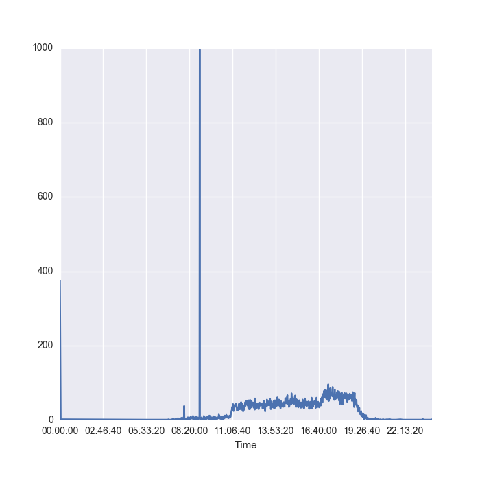
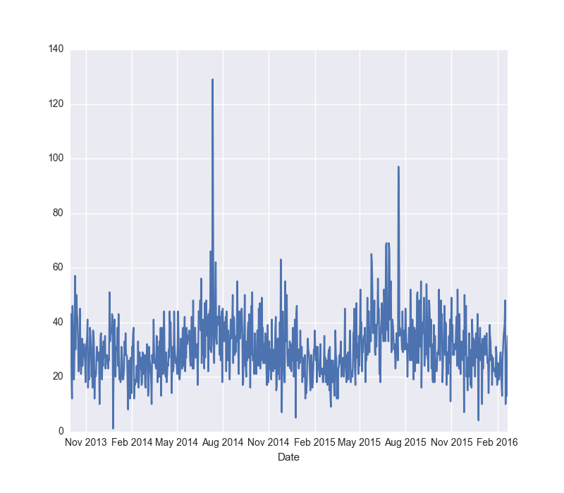
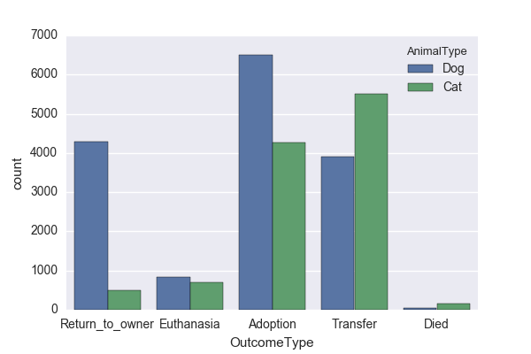
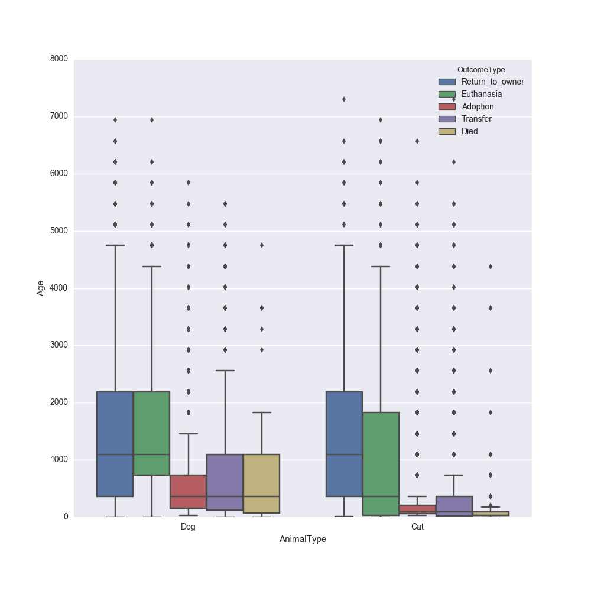
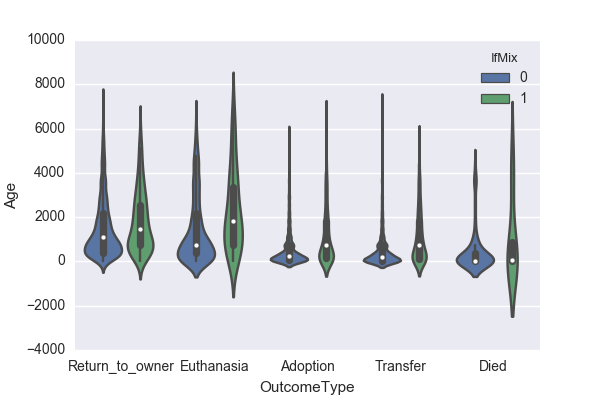

Gauri Phatak January 2017
This project will be using the Austin Animal shelter data provided by Austin Animal Center to predict the outcomes for shelter animals. This data is part of a completed competition on Kaggle website. According to the sources, 8-12 million animals enter shelters every year and about 5-9 million of those animals are euthanized. In this project we will be exploring the data provided to understand the trends behind the animal adoptions for the city of Austin. We will be starting of with Exploratory Data Analysis using both visual and statistical data. Once we get an idea about the correlations in the data, we will use classification methods to predict if the animal will adopted or not. This is a multi-class classification problem, and we will get the benchmark for the analysis comparison from the outcomes of the data science competition on kaggle.
The goal is to predict the outcome for an animal which enters the animal shelter. The process to be followed is:
- Download the data from Kaggle website.
- Preprocess the data columns as explained in the exploratory data analysis section.
- Run the benchmark DecisionTree algorithm.
- Gather the probability of the outcome.
- Run the RandomForest algorithm on the data.
- Run GridsearchCV and RandomizedCV algorithm to tune the model.
- Compare the output from the different algorithms and complete analysis.The Output of the algorithm will give us the probability of outcome for each output category.
Skills and tools used in the project:
- Python 2.7
- SciPy
- Sklearn library
- Numpy
- Pandas
- Seaborn
- Mou (for report)The test data that is provided by the kaggle team does not provide the output vector. Hence, evaluation is possible only in the kaggle environment. I will be using the predict_prob_ function from randomForest algorithm this output gives the probability for each factor in the outcometype column.
The data form the Animal Shelter Outcome competition in kaggle is one csv file of training data and one file of testing data. Here is a short explanation of the features and its dtype provided to us:
AnimalID object : Unique ID provided to each animal.
Name object : Name given to the animal. Some fields are left blank, possibly because the animal might not have a tag at time of admission.
DateTime object : Date and time at the time of outcome
OutcomeType object : This is the outcome we are expecting for each animal. We have 5 categories for this data
OutcomeSubtype object : This is a peripheral outcome for the animal. Some of the entries provide associated reason for the outcometype.
AnimalType object : Animal type is the type of animal. In this case either a cat or a dog.
SexuponOutcome object : This features tells us if the animal is Male or Female and intact or spayed/neutered.
AgeuponOutcome object : This give the age of the animal upon outcome.
Breed object : This gives the breed of the animal and tells us if they are mixed breed or not.
Color object : This feature gives the prominent colors found in the animal.
In the test data we do not have OutcomeType and OutcomeSubtype column. The score comparison can be done only directly with the kaggle submissions page. The AnimalID column is given as ID column in test data. Some of the data entries for the columns above is blank. This might be due to data entry error or lack of information. We will take a look into this further in the data pre processing section.
The plots below give relation between different feature and the outcome for each animal.
The plot below shows the time count for the given data. We can see that most of the entries we observe are taking place between 11 am and 7:30 p.m. this would make sense since the shelter is open from 11 a.m. till 7 p.m. We do see one anomaly in the data which shows the count for about 8.30 shoot up really high.

We will see in further plots where this anomaly lies.

Next we take a look at the data trends over Date. We can see a sinusoidal pattern here. We see that more animals are processed through the shelter during the summer months than during the winter months. We will see further how they are divided for different outcome types.

In the plot above we see that most of the animals both cats and dogs are adopted out or transferred. A lot more dogs are returned to owners than cats. They have not specified if the return to owner features means if the animal was lost and then it is returned or if the animal does not get adopted after surrender and then it is not returned. We can see that the number of cats dying is slightly higher than dogs dying. And the number of dogs euthanized is slightly higher than cats euthanized. The number of transfers for cats is higher than Dogs.
In the plot above we can see the gender distribution of the animals according to the outcome type. We can see that most of the animals who get adopted are either male or female. We have an unknown category where we do not know the gender of the animal upon outcome, this can be a clerical error. We can see that we know the gender of all the animals that are adopted.

We can see this distribution of cats and dogs over the major age brackets in the box plot above. Most of the adoption that happen for both cats and dogs happen for lower age group of animals. Interestingly most of the cats that get euthanized spread over a wide range of age. And most of the cats that died in the shelter are very young. This might be because the animal is sick when it got to the shelter.

In the violin plot above the distribution of animals is based on if they are mixed breed or not, with the age of the animal over y axis. We can see that most of the adoption happen at lower age for both mix and purebred animals. While most of the animals euthanized are spread over lower age groups if they are mix breeds, and they have a more even spread if they are purebred animals.

Here we see the distribution of number of animals based on if they were intact or not at the time of outcome. Most of the animals that get Adopted are spayed or neutered. We can see most of the animals that get transferred are intact. Many animals that are euthanized or die in care are intact. Many shelters have a rule where, upon adoption the animals has to be fixed. This plot might be an indication of that rule. Very few animals that get adopted are intact.
We will now see some time based outcome plots. We will see the distribution of outcomes over the day of the week, month and time of day.


We can see in the plots above the patterns for outcomes over different time metrics. In the first plot we can see that most of the adoptions happen during afternoon and evening. Most of the transfers happen during Afternoon. Most of the return to owner happen during afternoon and evening.
In the 2nd plot the Day of the week start from Monday denoting 0 and Saturday and Sunday denoted by 5 and 6. We can see that most adoptions happen during the weekend i.e. Saturday and Sunday. This makes sense, since most people would be free during the weekends to come out to checkout animals for adoption.
When we look at the distribution over the months we can see the sinusoidal distribution that we saw in the 2nd plot in this section.

In this plot we see the box plot for distribution of outcome over the months. We have he age distribution along the y axis.
Given than the target variable for our data is a categorical value, we will be using classification method for this project. We will be starting off with decision tree algorithm to get an idea of what the score would be with just a single tree implementation. Then we move on to RandomForest algorithm.
The decision tree algorithm would be the benchmark for my code. The Kaggle competition has provided with a built in benchmark value for this particular competition.
Random forest classifier is an ensemble method where in the algorithm creates number of decision trees based on the data provided to the algorithm. The issue with decision tree classifier is that it overfits the data. Random forest avoids such a problem as it uses multiple trees. The data selected for each tree is gathered by using bootstrap aggregation method or bagging. Bagging randomly chooses a subset of data form the training data with replacement and creates decision tree based on this data. After training, prediction decision is made by taking majority vote from the decision trees that are generated during training. One thing to note with random forest algorithm is that it uses modified tree learning algorithm, this means that if a particular features is a strong predictor, these features will be selected in many of the trees giving strong correlation between the trees thus created. In general case if the problem is that of classification, Sqrt(p) features will be used for creating the trees, p is the number of available features.
The dataset that I am working with here is a good candidate for random forest algorithm. The issue of overfitting which we observe in decision trees is not present in random forest. We don't have to worry about tuning the data too much for random forest algorithm. It is fast and scalable. But, we have to rebuild the tree if new data comes into picture. Since that is not a point of contention for us I am going to go ahead with Random Forest as the classification algorithm.
Evaluation (Directly from Kaggle)
Submissions are evaluated using the multi-class logarithmic loss. Each incident has been labeled with one true class. For each animal, you must submit a set of predicted probabilities (one for every class). The formula is then,
$$logloss = (-1/N) \sum_{i=1}^N \sum_{j=1}^M Y_ij log(P_ij)$$
Where N is the number of animals in the test set, M is the number of outcomes, \(log\) is the natural logarithm, \(y_{ij}\) is 1 if observation \(I\) is in outcome \(j\) and 0 otherwise, and \(p_{ij}\) is the predicted probability that observation \(I\) belongs to outcome \(j\).
Kaggle competition. In the Leaderboard page in the link to the competition above we can see that Kaggle has created an All Adopted Benchmark. I will be using this benchmark for project purpose. But as a personal challenge I will be using the decision tree algorithm as a benchmark, and aim for a better score as compared to decision tree algorithm. The reason for this is that I can run Decision tree on the data frame I have cleaned for both the algorithms and do an apples to apples comparison.
The underlying problem we are trying to solve in simplistic terms is to, predict the outcome for an animal based on the features and data entries provided to us from the Austin animal center. Here is the summary of the data we are dealing with:
| AnimalID | Name | DateTime | OutcomeType | OutcomeSubtype | |
|---|---|---|---|---|---|
| count | 26729 | 19038 | 26729 | 26729 | 13117 |
| unique | 26729 | 6374 | 22918 | 5 | 16 |
| top | A705677 | Max | 2015-08-11 00:00:00 | Adoption | Partner |
| freq | 1 | 136 | 19 | 10769 | 7816 |
| AnimalType | SexuponOutcome | AgeuponOutcome | Breed | Color | |
|---|---|---|---|---|---|
| count | 26729 | 26728 | 26711 | 26729 | 26729 |
| unique | 2 | 5 | 44 | 1380 | 366 |
| top | Dog | Neutered Male | 1 year | Domestic Shorthair Mix | Black/White |
| freq | 15595 | 9779 | 3969 | 8810 | 2824 |
As we can see in summary of the data below, most of the data we are dealing with is categorical data. The size of the data frame is 26729. Here is a sample of the head of the data-frame. I used Pandas to download the training and testing data from CSV file and create a pandas data frame using this data. Sample of the data frame is given below:
| AnimalID | Name | DateTime | OutcomeType | OutcomeSubtype | AnimalType | SexuponOutcome | AgeuponOutcome | Breed | Color |
|---|---|---|---|---|---|---|---|---|---|
| A671945 | Hambone | 2014-02-12 18:22:00 | Return_to_owner | NaN | Dog | Neutered Male | 1 year | Shetland Sheepdog Mix | Brown/White |
| A656520 | Emily | 2013-10-13 12:44:00 | Euthanasia | Suffering | Cat | Spayed Female | 1 year | Domestic Shorthair Mix | Cream Tabby |
| A686464 | Pearce | 2015-01-31 12:28:00 | Adoption | Foster | Dog | Neutered Male | 2 years | Pit Bull Mix | Blue/White |
| A683430 | NaN | 2014-07-11 19:09:00 | Transfer | Partner | Cat | Intact Male | 3 weeks | Domestic Shorthair Mix | Blue Cream |
| A667013 | NaN | 2013-11-15 12:52:00 | Transfer | Partner | Dog | Neutered Male | 2 years | Lhasa Apso/Miniature Poodle | Tan |
We will be modifying almost every column of data available to us to check if we can extract additional important information out of it.
AnimalID: Looking at the AnimalID column , I figured the first three characters of the ID are repeating for many or the entries, Hence it might give us some location information in the data. But looking at the data from the testing data, It looks like the same pattern is followed with the testing data animal IDs. This column becomes useless to us for all practical purposes.
Name: The name itself of an animal is not of important to us. But it might be important to note whether having a name or not might influence the outcome for the animal.
DateTime: This is a very interesting column which gives us a lot of information. This column gives us the date and time information at the time of the outcome. Using this column we can extract the weekday, month and time of the day the outcome occurred. We will see in the data exploration and visualization section how the outcome corresponds to the time , day and month of the outcome.
OutcomeType: This is the target variable i.e. the variable we are trying to predict. We have 5 categories for prediction.
OutcomeSubtype: This column gives information about the reasons for the outcometype for some of the entries. I had intended to use this since it seems to be giving information about why the decision for the outcomes are taken, but in the kaggle test data we can see that they have not provided this column. Hence, I will not be taking this column into consideration for the purpose of this report.
AnimalType: We have two unique animal types in this dataset. The animals can either be dogs or cats. We will not be making any changes to this column.
SexUponOutcome: SexuponOutcome column gives us the gender of each individual animal. It also gives us information if the animal is neutered/spayed or intact. We have 5 categories here. It seems to be that there is a lot of information compacted into one column here. I decided to split this column into the gender or the animal and if they are intact or not. There are entries where this information is unknown, I have just left those entries as unknown.
AgeUponOutcome: Age upon outcome gives us the information about that particular animal. This column gives string information about the age of the animal is weeks, months or years. I have converted the entries into the age of animal is days. For e.g. if the entry says the age of an animal is '5 months' I multiple 5 by 30 to get the approximate age of the animal. This method has its flaws since we would not know the exact age of the animals. But we can get a good approximation.
Breed: This column gives information about the breed of the animals. We also get information if the animal is mix breed or not. I have split this column to give two columns with more concise breed information. The first column tells us if the animal is mix breed or pure bred. The other column takes into account only the first mentioned column in case if the two breeds are separated by a '/'.
Color: This column gives the color information about the breed of the animal. If the data gives multiple colors for each animal, I choose only the first color. This reduces the number of factors we have to take into consideration.
This will give us the various columns we can work with. I have used random forest algorithm to model the data and the decision tree algorithm as the benchmark for the data. The kaggle competition this project is based on evaluates the data using log_loss method. And the benchmark score that they have used for the competition is 20.25113. I will be considering this as the benchmark for the project. But as a personal benchmark to do better than would be the decision tree algorithm using the data the I have molded.
Once I have created the various new columns with the relevant data I visualize them to get a good idea about the trends I can observe. We can see those visualizations in the exploratory visualization section. Once we get an idea of which columns might have a higher weight towards the decision. For calculating correlation between the variables I am going to use Spearmans Rho or Kendalls Tau since Pearsons Rho needs calculation of mean for calculating the correlation. We use the pandas corr function indicating the type of correlation. Here is the correlation visualised using seaborn:
To set the bench mark I first start with the decision-tree algorithm from sklearn library. Then move onto the random forest algorithm. To get the best parameters for the algorithm I ran the gridsearchCV algorithm with the grid param as given below:
param_grid =
{"max_depth": [1,3,6,10],
"max_features": range(1,10,1),
"min_samples_split": range(2,10,1),
"min_samples_leaf": range(1,10,1),
"bootstrap": [True, False],
"criterion": ["gini", "entropy"]}What this function does is, it takes the initialized ML algorithm , which in our case is the random forest algorithm and runs combinations for the grid parameters given above. The thing to note about grid searchCV is that it does not fit over all the parameters, it fits over parameters selectively, depending on if the parameter would generate a good result. In my case with the above parameters it took a very long time for the grid-search algorithm to run.
Sklearn library was used in the implementation of this project. Before I could run any classification algorithm on the data as is, I ran label-encoder on the categorical data in the dataset. This makes the data usable in the algorithms we tried for modeling. I ran the simple out the box Decision tree algorithm, and then the Random Forest algorithm. Further tuning with gridsearchCV and RandomizedsearchCV was tried to get the best parameters. The algorithm fitting process was relatively straightforward in this project. The tricky part was gathering useful information from the dataset that we were provided. Since we used Random forest algorithm, I did not need to cross-validation to check cross-validation score on the data. Testing was performed on data provided by kaggle, and since they had not provided with the correct output the accuracy of the output could only be tested using the score on the kaggle leaderboard. Once the training data was fit using Random-forest I ran the predict_proba function on the testing data.
The initial solution for this problem would the out of box RandomForest algorithm. To tune it further I ran both the RandomizedCV and GridcSearchCV algorithm to get better tunes parameters. The parameters I used for the GridSerachCV were as below:
param_grid =
{"max_depth": [3,6,10],
"max_features": [3,6,8,10],
"min_samples_split": [3,6,10],
"min_samples_leaf": [3,6,10],
"bootstrap": [True, False],
"criterion": ["gini", "entropy"]}
I saw a marked improvement in the RandomForest implementation using the tuned parameters.
The final parameters chosen by gridsearchCV were chosen to because they gave the best results in the tried combinations.
As a comparison between RandomsearchCV and grid search CV we did not see a whole lot of improvement. There were instances where RandomsearchCV performed just slightly better than gridsearchCV.
The final parameters used in the algorithm implementation are as given below:
Parameters:
{'bootstrap': True,
'min_samples_leaf': 9,
'max_features': 4,
'criterion': 'gini',
'min_samples_split': 6,
'max_depth': 9}The bench mark score that is provided on the Kaggle competition leaderboard is 20.25113 (log-loss method as described earlier). My personal benchmark using Decision tree classifier scores at 16.3507. The results I get from using random forest algorithm right out of the box is 1.0219. The result I get from tuning the random forest algorithm using RandomizedCV is 0.86391. the result I get from using GridsearchCV is 0.86818. I ran the RandomizedsearchCV with a larger set of parameters. The score i got with that experiment is 0.85437. As we can see the result we got with this model is slightly better than the grid searchCV result. We cannot run the same parameter grid in GridsearchCV since it would take prohibitively longer amount of time to run the grid with these many parameter values. There are other solutions on the Kaggle leaderboard which have performed much better classification than the results I have found. Based on this my conclusion is while the model implemented here is giving a good score it still needs to be tuned further to to be useful in a production environment.
We will take a look at the correlation matrix of the features from the final dataset:
The correlation between a number of parameters seems weak at best. outcometype variable seems to be having negative correlation with many of the other features we see here. Overall this a losely correlated feature set. Hence most features would carry their own weight.
We can see the importance given to every feature by checking the 'Feature_importance_' values we get from RandomForest classifier.
Age, date and reproduction are the top three features with respect to feature importance.
We started off with the training set that Kaggle provided and cleaned and transformed the data into usable labeled dataset.
The process for this project was interesting in the sense that there was less emphasis on the actual algorithm and more on the data cleaning and transformation.
The data quality is of more importance than a good algorithm. This might be one of those cases. If they had given some more information about the animals. Like breed group, size info , etc., we could have had better predictive ability. But this information can be added using the existing data as well.
The solution presented in this project can be used in general setting for the City of Austin animal data. The point to note here is that, city of Austin might not be a good reflection of the adoption habits of the entire country.
If we can get the data for other cities as well, we can create a map of cities where adoption rate is higher and animals from lower adoption possibilities can be transferred to cities with higher adoption rates. Or even intercity movement to shelters with higher adoption rate is possible.
There were a few improvements I would like to do on the project going forward. I would like to include and use the outcome-subtype column in the analysis in some way that it reflects with the output column. One more improvement that I would like to do going forward is gather the groups for all the breeds and separate them based on groups rather than the breed name. E.g. we know that chihuahua and shitzu are toy dog breeds and german shepherds and collies are herding breeds. I would like to separate the dog based on the breed group rather than the breed name. This would reduce the number of categories we have and might give a better idea on adoption preference for people in general.Based on the animal breed we can figure out the weight range that dog is expected to be. This would give an idea of the size of the animal. We can get an idea if people prefer bigger or smaller animals.
As we can see form the results on the kaggle leader board , better solutions do exist for this dataset, but the difference solution implemented here and the winning solution is not huge but it get more difficult to reach that level as we try to find the best combinations of parameters and beter features for tuning the algorithm.
http://english.stackexchange.com/questions/28498/precise-names-for-parts-of-a-day
http://scikit-learn.org/stable/auto_examples/model_selection/randomized_search.html
https://www.analyticsvidhya.com/blog/2015/06/tuning-random-forest-model/
http://scikit-learn.org/stable/modules/generated/sklearn.ensemble.RandomForestClassifier.html
http://stackoverflow.com/questions/26489961/python-rank-order-correlation-for-categorical-data
https://www.stat.berkeley.edu/~breiman/RandomForests/cc_home.htm
https://www.kaggle.com/c/shelter-animal-outcomes/leaderboard
http://pandas.pydata.org/pandas-docs/stable/generated/pandas.DataFrame.corr.html
https://en.wikipedia.org/wiki/Random_forest
http://blog.echen.me/2011/04/27/choosing-a-machine-learning-classifier/
http://scikit-learn.org/stable/auto_examples/ensemble/plot_forest_importances.html